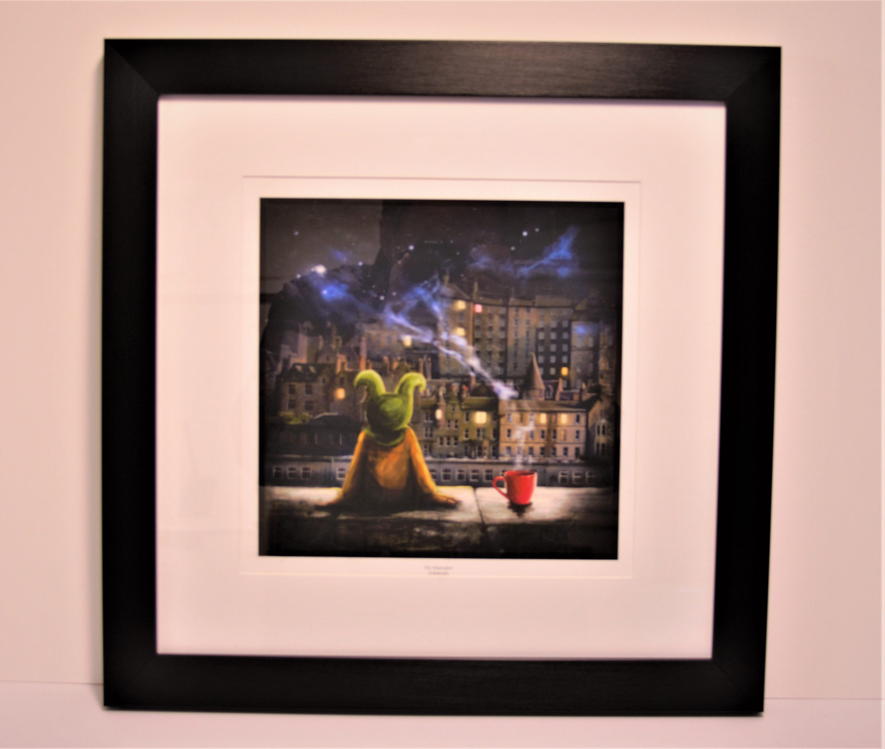
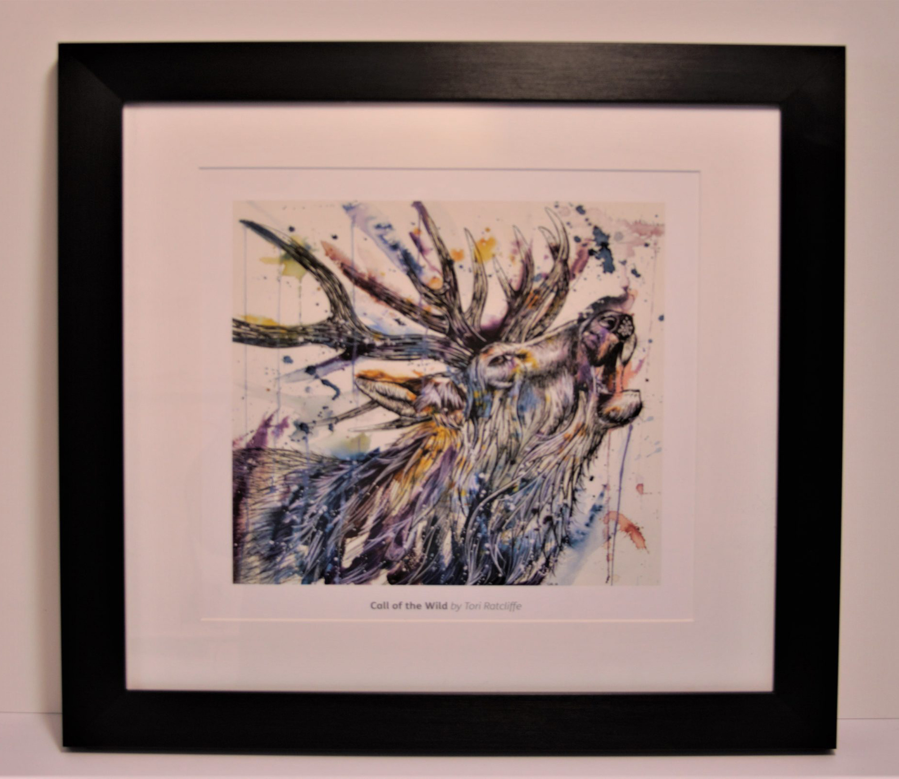
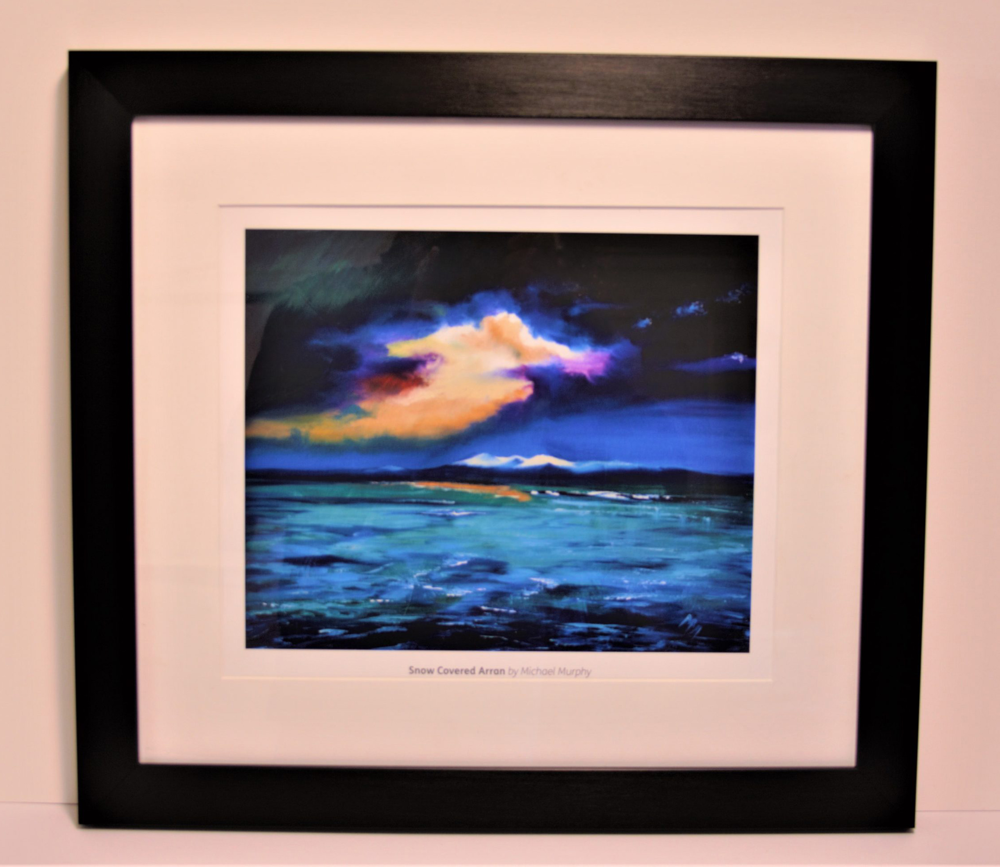
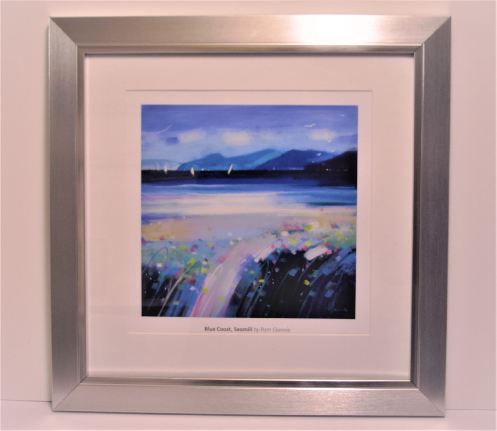

WELCOME TO REFLECTIONS OF SCOTLAND
At REFLECTIONS OF SCOTLAND we offer high quality prints by some of the best Scottish artists whose work we feel best represents the beauty of Scotland.
The prints we offer show both city and coastal scenes from Edinburgh to the stunning views of the East and West coasts.
The prints can be supplied either framed or mounted. You can choose from several frames from our ‘FRAMES’ page.
If there is a particular print that you are looking for and which we do not advertise, please let us know as we can probably source it for you.
If you have any questions regarding our prints or services please do not hesitate to contact us via the ‘CONTACT’ page.
Printing
The prints we offer show both city and coastal scenes from Edinburgh to the stunning views of the East and West coasts.
The prints can be supplied either framed or mounted. You can choose from several frames from our ‘FRAMES’ page.Visits: 1959
- 
- 
- 
- 